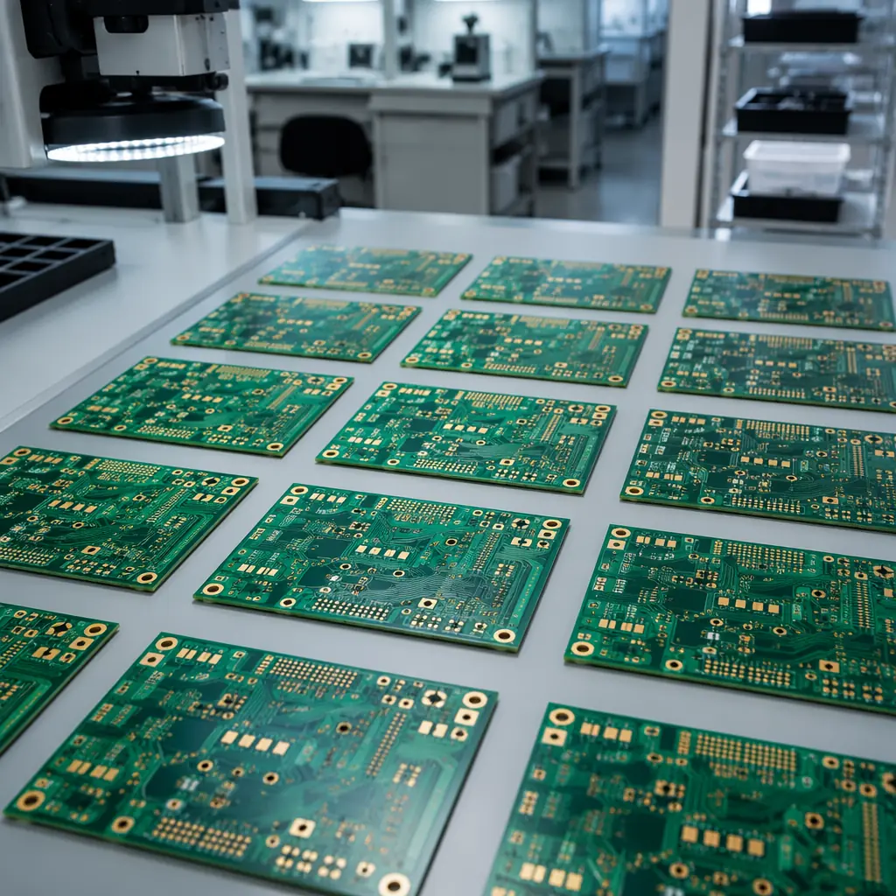
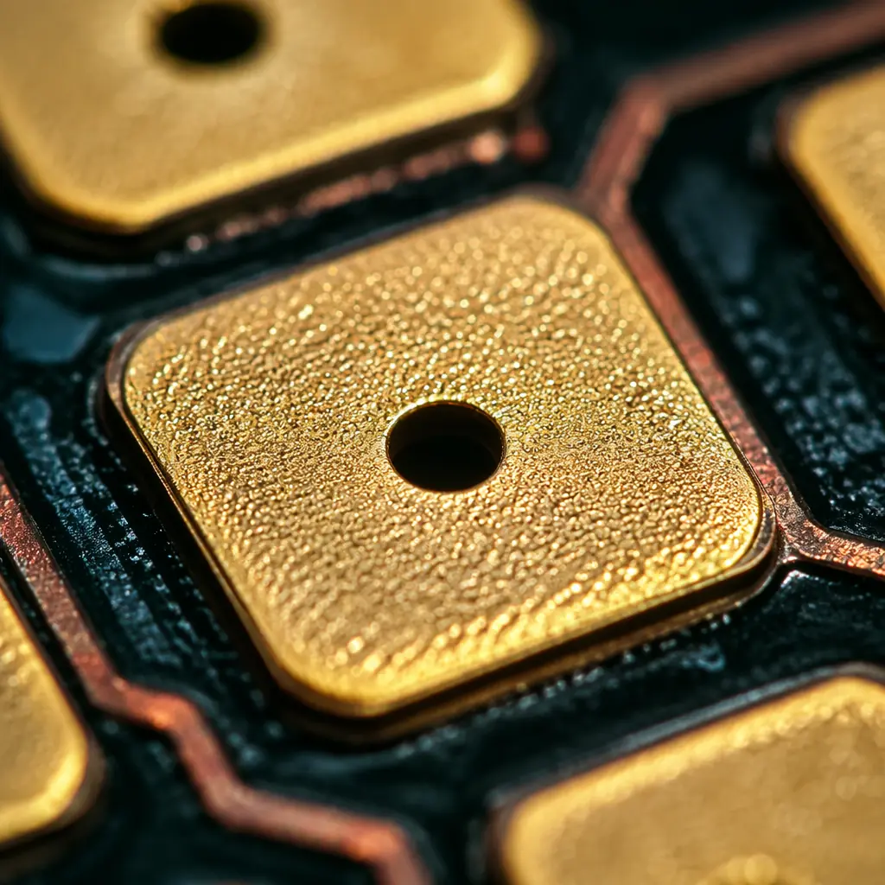
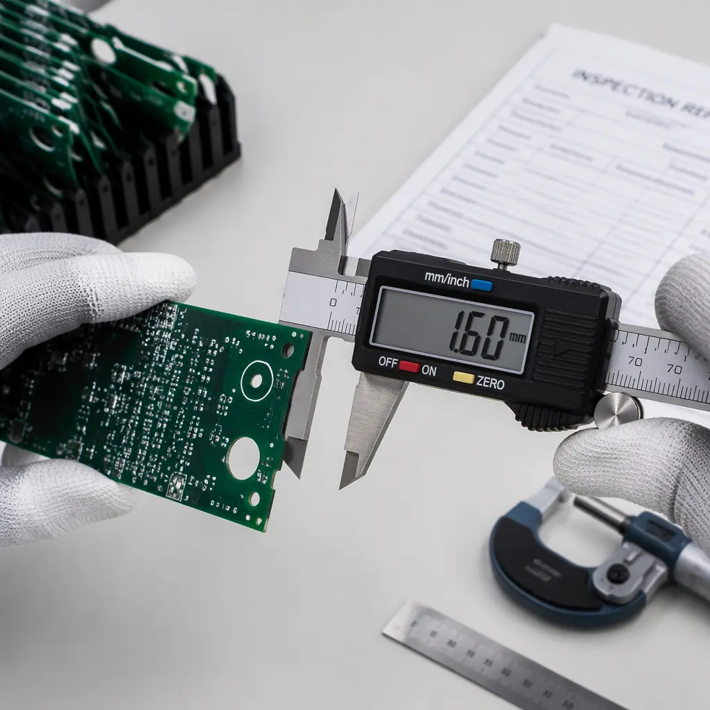

You've placed your PCB order, waited through the lead time, and the shipment has arrived. Now comes the moment of truth: do these boards meet your specifications? Skipping incoming quality inspection (IQC) is the fastest way to discover soldering defects after assembly — when a single failed batch can cost 10-50× more to rework than it would have cost to catch upfront.
At Huaxing PCBA, our three-stage quality control process — IQC → IPQC → OQC — catches over 99.2% of defects before boards leave the factory. But even with the best supplier, your own incoming inspection is the final safety net. This guide covers the visual checkpoints, IPC-A-600 acceptance criteria, and common rejection-worthy defects every buyer should know — whether you're inspecting 5 prototype boards or 50,000 production units.

Why PCB Incoming Inspection Is Non-Negotiable
PCB manufacturing involves over 40 process steps — from inner layer imaging to final surface finish. Even ISO 9001-certified factories with AOI and flying probe testing can ship boards with issues that only become apparent during assembly. Here's what the data tells us:
Industry Reality: IPC studies show that incoming inspection catches 60–80% of PCB defects before assembly. Without IQC, the cost of a single defective PCB discovered post-SMT ranges from $50–500 in rework, plus 2–8 hours of line downtime. For a batch of 1,000 boards with a 2% defect rate, that's $1,000–10,000 in avoidable costs.
Three reasons incoming QC is your highest-ROI quality activity:
Cost Amplification — defects get exponentially more expensive downstream
A bare-board defect caught at IQC costs $0.50–5 to replace. The same defect discovered after SMT assembly costs $20–200 in rework. After box-build integration, it can exceed $500. By final field return, a single PCB defect can trigger a $5,000+ warranty claim. See our PCB assembly process guide for the full manufacturing flow.
Supplier Accountability — documented IQC data drives corrective action
The difference between a supplier who continuously improves and one who doesn't is whether defects are systematically measured and reported. A structured IQC process with AQL sampling plans (typically 0.65% for critical defects, 2.5% for major) gives you objective data for supplier scorecards and quarterly business reviews.
Solderability Assurance — the hidden killer that visual inspection alone misses
Boards can look perfect but fail to wet properly during reflow due to surface oxidation, contamination, or improper ENIG plating thickness. Solderability testing — even a simple dip-and-look test per IPC J-STD-003 — catches issues invisible to the naked eye. We cover this in depth in our PCB testing methods comparison.

11-Point Visual Inspection Checklist
Visual inspection is your first line of defense — it takes 2–3 minutes per board and catches the majority of cosmetic and dimensional defects. Use 3–5× magnification for general checks and 10–20× for pad/solder mask detail. Here's the complete checklist, organized from most to least common:
Solder Mask Coverage & Registration
Look for solder mask bleed onto pads (reducing solderable area), skips (exposed copper in areas that should be covered), and misregistration (>0.1mm offset between mask and pad). Accept per IPC-A-600 Class 2: solder mask encroachment on lands must not exceed 0.1mm for SMT pads. For Class 3, no encroachment is permitted on BGA pads. A properly specified solder mask eliminates most registration issues at the source.
Surface Finish Uniformity
Inspect ENIG pads for black pad syndrome (dark, non-wetting nickel surface), OSP for copper discoloration (oxidation), and HASL for uneven solder leveling. Hold the board at a 15–30° angle under bright light — uneven finish reflects differently. ENIG thickness should be 0.05–0.15µm gold over 3–5µm nickel; anything below these minimums risks solderability failure.
Trace Integrity — Opens, Shorts, Nicks & Lifted Traces
Scan for broken traces (opens), unintended bridging between adjacent traces (shorts), nicks reducing trace width by >20%, and lifted traces peeling from the substrate. Use backlighting to spot internal layer cracks in multilayer boards. For controlled impedance traces, any nick >10% of trace width alters the impedance profile and should trigger rejection.
Hole Registration & Breakout
Check that drilled holes are centered on their pads. Annular ring breakout (hole edge touching or exceeding the pad boundary) is rejectable per IPC-A-600 Class 3. For Class 2, 90° breakout is acceptable provided the remaining connection meets minimum conductor spacing. Our via technology guide covers acceptable annular ring specifications for blind, buried, and through-hole vias.
Silkscreen Legibility & Accuracy
Verify all reference designators match your BOM and assembly drawing. Look for smeared or illegible text, missing polarity marks (pin-1 indicators, cathode marks), and misaligned component outlines that could confuse pick-and-place programming. Silkscreen that bleeds into pads is rejectable if it reduces solderable area.
Board Dimensions & Thickness
Measure overall length, width, and thickness at multiple points with calibrated calipers (±0.1mm accuracy). Thickness tolerance per IPC-6012 is ±10% for boards ≤0.8mm and ±0.15mm for boards >0.8mm. Warpage and twist should not exceed 0.75% of the diagonal dimension for SMT-compatible boards.
Scoring / Routing Quality
Inspect board edges and V-score lines. Rough edges (>0.1mm fiber protrusion), incomplete scoring, and residual tabs can cause handling issues during SMT placement. Depanelization should leave clean edges — jagged edges indicate dull router bits and poor process control.
Delamination & Measling
Check for delamination (separation between layers, visible as bubbles or white spots) and measling (white spots at weave intersections indicating micro-cracking). Per IPC-A-600, measling is acceptable if it does not bridge between conductors. Delamination is never acceptable — it indicates a fundamental lamination process failure.
Contamination & Foreign Material
Look for flux residue, fiberglass dust, metal shavings, fingerprints, and water marks. Ionic contamination can cause electrochemical migration and dendritic growth over time. If contamination is visible, consider requesting a cleanliness test per IPC-TM-650 2.3.25 (ROSE test).
HAL / HASL Quality (if applicable)
For HASL-finished boards, inspect for solder icicles bridging between pads, uneven coating thickness (copper visible through thin spots), and solder balls trapped under components. HASL thickness should be 1–40µm on SMT pads — below 1µm risks poor solderability.
Beveling & Edge Connector Quality
If your board has gold finger edge connectors, verify bevel angle (typically 30–45°), gold plating thickness (0.75–1.5µm minimum per IPC-4556), and absence of nicks or scratches on the contact surface. Edge connector defects are critical — they can cause intermittent connections in the field.
Common PCB Defects: Reject vs Accept Decision Guide
Not every visual anomaly is a rejection. The table below summarizes the most common PCB defects, their root causes, and whether they warrant rejection under IPC-A-600 Class 2 and 3 standards:
| Defect | Appearance | Root Cause | Class 2 | Class 3 |
|---|---|---|---|---|
| Solder mask bleed on pad | Green/colored mask extending onto SMT pad | Poor registration or over-exposure | Acceptable if ≤0.1mm encroachment | Reject on BGA/QFN pads |
| Annular ring breakout | Hole edge touching/exceeding pad edge | Drill misregistration | Acceptable if 90° remaining | Reject |
| Nick in trace | Notch or gouge reducing trace width | Handling damage or etching overcut | Acceptable if ≤20% width reduction | Acceptable if ≤10% width reduction |
| Solder mask skip | Exposed copper where mask should be | Incomplete mask application | Reject if >0.5mm² | Reject if any exposed copper |
| Measling | White spots at glass weave intersections | Thermal stress during soldering | Acceptable if not bridging conductors | Reject if >5 spots per 100cm² |
| Delamination | Bubbles or separation between layers | Moisture, poor lamination pressure | Reject | Reject |
| ENIG black pad | Dark gray/black nickel surface | Excessive gold thickness or phosphorus enrichment | Reject (solderability compromised) | Reject |
| Hole void (resin smear) | Resin coating inside plated hole wall | Incomplete desmear process | Acceptable if <1 hole per board | Reject |
Procurement Tip: If your supplier can't tell you which IPC-A-600 class they inspect to, assume Class 1 (general electronic products). For industrial, medical, and automotive applications, insist on Class 2 minimum with written acceptance criteria. Our IPC Class 2 vs Class 3 guide breaks down the differences in detail.

IPC-A-600 Acceptance Criteria: Quick Reference for Buyers
IPC-A-600 ("Acceptability of Printed Boards") is the industry bible for bare-board inspection. You don't need to memorize all 180+ pages — here are the six acceptance criteria categories every buyer should understand:
Base Material (Sections 2.1–2.6)
Covers laminate quality: measling, crazing, delamination, weave exposure, and blistering. The most important threshold: no conductive bridging between adjacent conductors due to material defects. Our PCB materials guide explains how FR-4, high-Tg, and specialty substrates differ in inspection behavior.
Plated-Through Holes (Sections 3.1–3.7)
The most failure-prone area in multilayer boards. Check for: copper plating voids (>5% of hole wall = reject), resin smear, nailheading (flared copper at hole entrance), and inner layer separation. Cross-section analysis is the only way to verify plating thickness meets the 20–25µm minimum for Class 3.
Conductor Patterns (Sections 4.1–4.5)
Trace width/space violations, nicks, pinholes (>0.8mm = reject in Class 3), and edge definition. For controlled impedance boards, verify trace width with a calibrated microscope — a 5µm deviation on a 100µm trace changes impedance by 2–3Ω, which can push a ±10% spec out of tolerance.
Solder Mask & Coverlay (Sections 5.1–5.5)
Misregistration, blistering, adhesion loss, and cured mask thickness. Mask thickness under 10µm on traces risks dielectric breakdown during high-voltage testing. Mask adhesion is verified with a tape test (IPC-TM-650 2.4.28.1).
Surface Finish (Section 6.1–6.6)
Uniformity, thickness, and solderability of the final finish. This section is especially critical for ENIG boards — IPC-4552 specifies 0.05–0.15µm gold over 3.0–5.0µm nickel. XRF measurement is the only reliable verification method for plating thickness.
Cleanliness (Section 10.1)
Ionic contamination limits: <1.56 µg/cm² NaCl equivalent per IPC-6012 for all classes. Exceeding this threshold accelerates electrochemical migration and dendritic growth, especially in high-humidity environments. Our conformal coating guide covers protection strategies for harsh operating conditions.
Setting Up an Incoming QC Process That Scales
A one-person visual check works for 10 boards. For 10,000 boards, you need a documented, repeatable process. Here's the framework:
Define AQL Sampling Plan
Use ANSI/ASQ Z1.4 (formerly MIL-STD-1916) to determine sample size based on lot size. For critical defects (safety, functionality), use AQL 0.065–0.10%. For major defects (cosmetic, dimensional), use AQL 0.65–1.0%. For a lot of 1,000 boards at AQL 0.65%, inspect 80 boards — if ≤2 fail, accept the lot.
Create Inspection Checklists (Digital, Not Paper)
A spreadsheet or app-based checklist with pass/fail criteria for each of the 11 visual checkpoints above ensures consistency across inspectors. Digital records create an auditable trail — essential for ISO 9001 and IATF 16949 compliance audits.
Invest in the Right Tools
Minimum toolkit: stereo microscope (10–40×), digital calipers (±0.01mm), go/no-go pin gauges for hole diameters, solderability test station, and a flatness gauge for warpage measurement. Budget $500–1,500 for a basic setup that covers 90% of inspection needs.
Add Periodic Cross-Section Analysis
For critical orders (automotive, medical, aerospace), request a cross-sectional microsection analysis from your supplier on 1–2 sacrificial boards per lot. This is the only way to verify copper plating thickness in PTH barrels and confirm layer-to-layer registration. Some buyers add this as a contractual deliverable. Learn more about supplier qualification in our PCB supplier audit guide.
Final Word: Inspection Is Your Insurance Policy
Spending 15 minutes on incoming inspection per lot of 100 boards costs roughly $10 in labor. Avoiding a single batch of 50 defective boards that would fail post-SMT saves $1,000–5,000 in rework costs and preserves your production schedule. The math is unambiguous: IQC is the highest-ROI activity in electronics manufacturing quality control.
At Huaxing PCBA, we ship every board with a Certificate of Conformance (CoC) documenting the inspection standards applied — including AOI coverage, flying probe test results, and IPC-A-600 class conformance. Our three-stage quality system (IQC → IPQC → OQC) and 8 SMT lines with 24/7 production capability mean you get consistent quality at scale. See our complete testing and inspection capabilities or submit your Gerber files for a 24-hour quote with free DFM review.